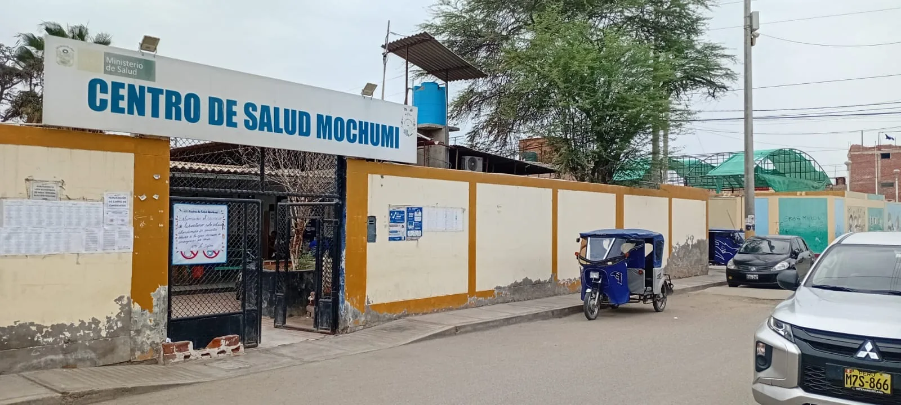

Nuestro propósito
Brindar una atención médica integral, preventiva y especializada de calidad con calidez humana, accesibilidad geográfica y equidad para Mochumí y sus anexos rurales.
Al servicio de la salud y el bienestar de las familias de Mochumí.
Promovemos una atención integral, cercana y humana, orientada a la prevención y al cuidado de nuestra comunidad.

Los principios que orientan nuestro compromiso con la salud y el bienestar de la comunidad.
Brindar una atención médica integral, preventiva y especializada de calidad con calidez humana, accesibilidad geográfica y equidad para Mochumí y sus anexos rurales.
Proveer servicios de salud asistenciales, preventivo-promocionales y de urgencia con estándares de calidad sanitaria, promoviendo el bienestar integral de las familias mochumanas.
Consolidarse al 2030 como el Centro de Salud de primer nivel modelo en la Región Lambayeque, reconocido por su excelencia asistencial, liderazgo en Teleatiende e infraestructura ampliada.
Un recorrido por los principales acontecimientos que forman parte de nuestra trayectoria institucional y nuestro compromiso con la comunidad.
Año de inicio de actividades consignado en los datos registrales del establecimiento reproducidos por una fuente secundaria. Pendiente de confirmación oficial.
Reconocimiento del Centro de Salud Mochumí como establecimiento de categoría I-3, correspondiente al primer nivel de atención.
Consultar fuente oficialGestiones para el mejoramiento de los servicios de salud y la infraestructura del establecimiento, mediante el proyecto de inversión con CUI 2609511.
Consultar acuerdo municipalActualización de la cartera de servicios del Centro de Salud Mochumí, orientada a fortalecer la atención sanitaria de la población.
Seis principios fundamentales que guían nuestra vocación de servicio y nuestro compromiso con la comunidad.
Tratamos a cada persona con empatía, respeto, escucha activa y dignidad en todas las etapas de la vida.
Buscamos la máxima precisión médica y eficiencia asistencial con los recursos disponibles en el primer nivel.
Trabajamos codo a codo con la Municipalidad de Mochumí, las juntas vecinales y los agentes comunitarios de salud.
Promovemos una rendición de cuentas clara en trámites, procesos asistenciales, uso de recursos y servicios del Estado.
Incorporamos la telemedicina para superar las barreras de distancia y conectar a nuestros pacientes con especialistas.
Promovemos el acceso universal a la salud sin discriminación geográfica, económica ni social.
Información general del Centro de Salud Mochumí y su identificación dentro del sistema sanitario.
Primer nivel de atención
Código RENIPRESS 00004380Establecimiento de salud sin internamiento.
Resolución Directoral Ejecutiva N.° 089-2024-GR.LAMB/GERESA-DESIP, correspondiente a la aprobación de la cartera de servicios.
Conoce la articulación sanitaria del Centro de Salud Mochumí con los establecimientos de su microrred.
Gerencia Regional de Salud
Articulación de establecimientos sanitarios
Microrred Mochumí
Esquema referencial basado en la articulación sanitaria documentada por el Gobierno Regional de Lambayeque. No corresponde a un organigrama interno oficial actualizado.
Consultar fuente institucional Conoce nuestra microrredEn el Centro de Salud de Mochumí creemos que la salud de calidad no es un privilegio, sino un derecho humano fundamental que debe llegar con calidez a cada hogar de nuestro distrito.
Creemos en la prevención como la mejor medicina, en la innovación tecnológica como puente para superar distancias y en la calidez humana como el remedio más valioso en momentos de vulnerabilidad.
Trabajamos cada día con vocación de servicio, uniendo la experiencia de nuestro personal de salud con la fortaleza de nuestra comunidad y el respaldo de la región Lambayeque.
Porque cuidar de ti y de tu familia es nuestra verdadera razón de ser.
Salud con calidez al servicio de Mochumí